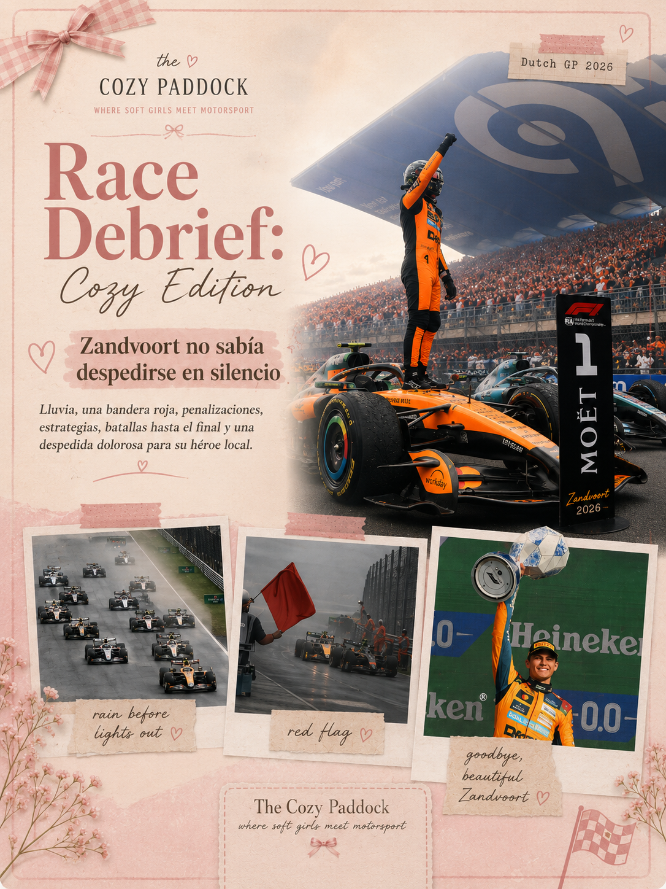
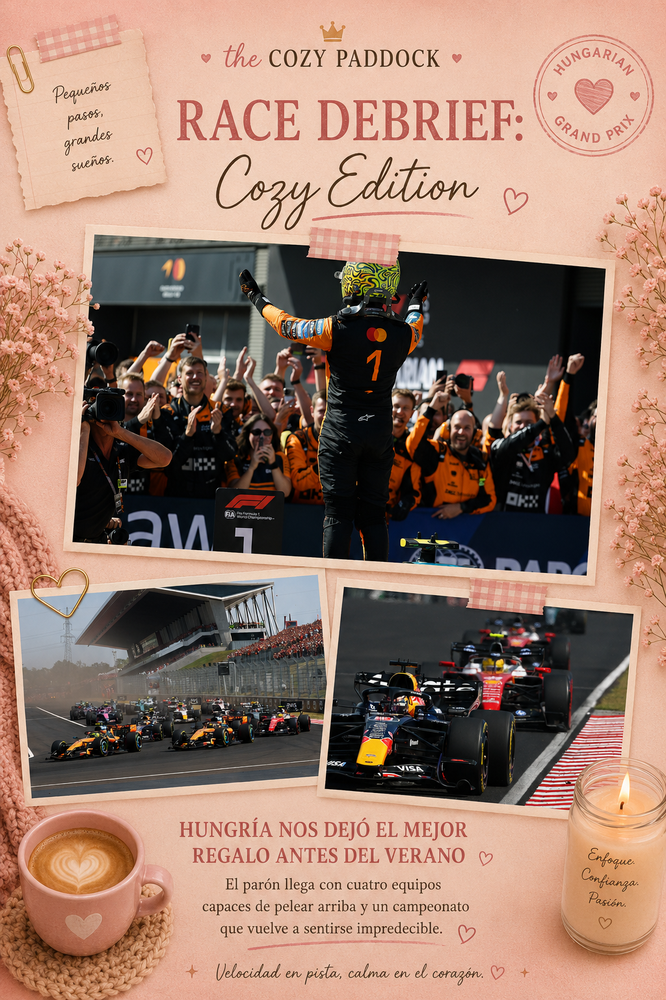
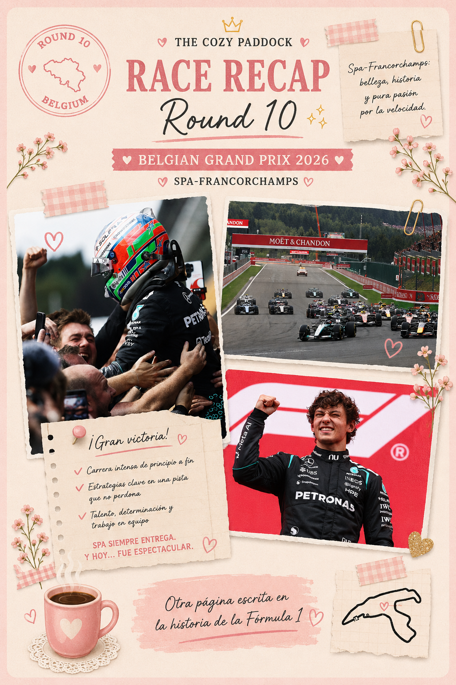
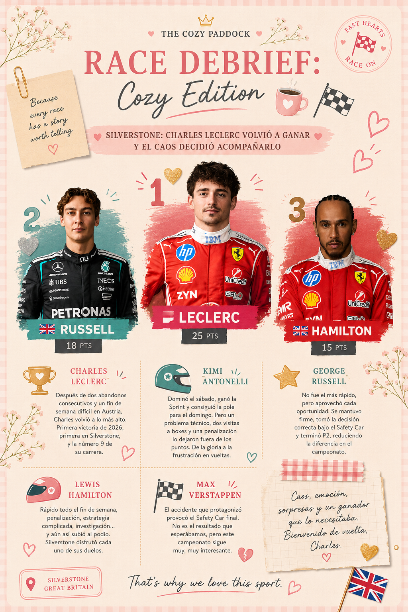
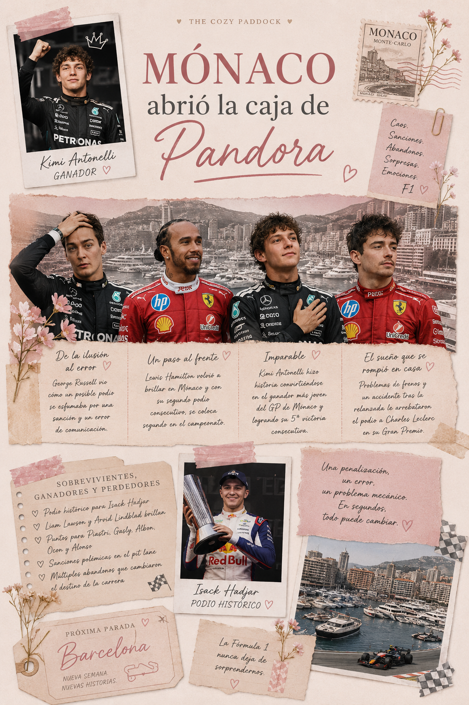

Verstappen vuelve a lo más alto: caos, lluvia y redención en Sepang
Max Verstappen consiguió su primera victoria de la temporada 2026 en un Gran Premio de Baréin que, curiosamente, se disputó muy lejos de Baréin. Sepang regresó a la Fórmula 1 después de casi una década y lo hizo de la mejor manera posible: lluvia, estrategias cruzadas, Safety Cars, errores, adelantamientos y una carrera que cambió varias veces de rumbo.
Habían pasado nueve años desde la última vez que la Fórmula 1 corrió en el Sepang International Circuit y, como si el circuito quisiera recordarnos por qué tantos lo extrañaban, el domingo decidió recibir a la parrilla con lluvia...

GP de Madrid 2026: la estrategia decidió lo que las calles no pudieron
Kimi Antonelli ganó la primera carrera de Fórmula 1 en Madring, por delante de Max Verstappen y Lando Norris, en un Gran Premio que prometía caos pero terminó siendo mucho más estratégico que dramático.
Madrid tenía todos los ingredientes para darnos una carrera desordenada...

KIMI ANTONELLI: DE P19 A LA GLORIA EN MONZA
Hay carreras que se ganan desde la pole. Otras, con una estrategia perfecta. Y luego están las carreras como esta.
Kimi Antonelli ganó el Gran Premio de Italia después de arrancar desde la P19...
Zandvoort no sabía despedirse en silencio
La última carrera entre las dunas tuvo lluvia, una bandera roja, penalizaciones, estrategias, batallas hasta el final y una despedida dolorosa para su héroe local.
Hay circuitos que se despiden con una última carrera tranquila, casi ceremonial. Una bandera a cuadros, algunas fotografías, un poco de nostalgia y la promesa de recordar los buenos momentos...

Hungría nos dejó el mejor regalo antes del verano
Hay carreras que se recuerdan por el ganador.
Otras, por un adelantamiento imposible.
Algunas, por un abandono inesperado.
Pero el Gran Premio de Hungría nos dejó algo mucho más valioso antes del parón de verano ...

En Spa, sobrevivir también fue una victoria.
PSpa-Francorchamps volvió a demostrar por qué es uno de los circuitos más impredecibles de la Fórmula 1. Entre adelantamientos, estrategias, penalizaciones y abandonos, el Gran Premio de Bélgica nos recordó que, en este deporte, la velocidad es solo una parte de la historia ...

Silverstone: Charles Leclerc volvió a ganar y el caos decidió acompañarlo.
Hablemos de Silverstone.
Porque llegamos al Gran Premio de Gran Bretaña pensando que Ferrari podía tener un fin de semana complicado y terminamos viendo a Charles Leclerc ...

Mónaco abrió la caja de Pandora
Lo que parecía ser otra carrera definida por la estrategia terminó convirtiéndose en un caos absoluto durante los giros finales.
Si bien fue un perfecto fin de semana para olvidar para varios pilotos, otros aprovecharon el desastre para conseguir algunos de los mejores resultados ...

El caos de Canadá confirmó algo: la nueva generación ya llegó
Canadá nos dio uno de los fines de semana más caóticos e intensos de la temporada
Desde equipos reivindicándose, malas estrategias, problemas técnicos y penalizaciones por todos lados, el Circuit Gilles Villeneuve...

Round 5: Gran Premio de Canadá 2026
Estamos oficialmente en semana de carrera y eso solo puede significar una cosa: vuelve el caos controlado de Montreal. El Gran Premio de Canadá 2026 será el quinto round del campeonato y se disputará del 22 al 24 de mayo en el legendario Circuit Gilles-Villeneuve, uno de los trazados más rápidos, impredecibles...